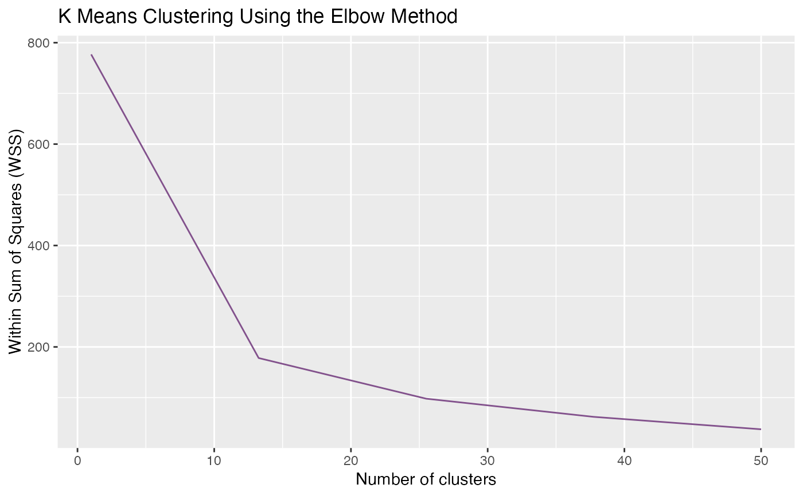

Generate clusters
gClusters.RdgClusters() returns the clusters generated by k-means and yield
an elbow plot as a way of finding the optimal parameter.
Arguments
- data
A scaled data.frame that contain variables
ID,value on time_1, ...,value on time_k, andtypefor extracting patterns across the time. See alsopre_process().- ncluster
A number of clusters. It is related to the complexity of information in the network: When choosing the
ncluster, we suggest thinking about how many nodes you are about to show on the visualization and how representative you want for each clustered pattern.- elbow.max
A number of the maximum value of x-axis for the elbow method plot. It should be larger than the expected
nclusterand smaller than the sample size.- iter.max
A number of the maximum iterations allowed in k-means. See also
stats::kmeans.- nstart
A number of random attempts of generating initial configurations. The k-means algorithm will choose the best one among these attempts. For larger data, 'nstart' can be set lower or just set to 1. See also
stats::kmeans.
Details
To determine the optimal number of clusters (ncluster), it is advised to closely examine the elbow plot and identify the point on the graph where a substantial change or 'elbow' occurs. This is often indicative of the most suitable cluster count.
In cases where your dataset is extensive or intricate, you might consider increasing the value of elbow.max to ensure a more comprehensive exploration of potential cluster counts. This can help in achieving more accurate and meaningful results, especially when working with larger or more complex datasets. This function can be executed with only the data parameter at the outset. However, to achieve the best clustering results, further adjustments are recommended. After the initial run, users are expected to adjust the function's parameters based on the clustering outcomes and the elbow plot analysis.
Examples
data(test_data)
reslist <- gClusters(test_data_processed)
# k-means result
reslist[[1]]
#> K-means clustering with 20 clusters of sizes 4, 9, 4, 8, 4, 6, 2, 5, 3, 9, 10, 10, 5, 3, 1, 4, 3, 4, 3, 3
#>
#> Cluster means:
#> T1 T2 T3 T4 T5 T6
#> 1 -0.12255061 -0.44139873 -0.19548572 1.0299038 2.38406291 -0.2147528
#> 2 2.34578310 -0.05646618 -0.66925519 -0.3111878 -0.57046065 -0.6594499
#> 3 0.02192608 -0.78673765 -0.66442613 -0.8008892 -0.92320072 1.3488860
#> 4 0.07679358 -0.43047129 -0.49676255 -0.1233479 -0.21527058 2.5811537
#> 5 1.12205113 0.09185659 -0.89815993 -0.7233153 -0.57179240 -0.8603755
#> 6 -0.38022191 -0.36840199 0.02254271 1.6459653 1.96336183 -0.3246455
#> 7 -0.27847690 -0.82258408 -0.82258408 -0.8225841 1.23387613 -0.8225841
#> 8 -0.81355388 -0.84696982 -0.32573017 1.1218534 2.09558116 -0.5620731
#> 9 0.26998015 -0.08094677 -0.28926312 -0.7813127 -0.60650512 -0.1494523
#> 10 0.98674702 -0.37142993 -0.15078934 0.6917139 0.89754197 1.2963889
#> 11 2.44625224 0.02442663 -0.45653096 -0.3605896 -0.46286941 0.6267405
#> 12 -0.19020083 -0.69654961 -0.66836949 -0.4657663 -0.38514865 -0.5590421
#> 13 1.15678191 -0.07843372 -0.34948609 -0.2676535 -0.58388129 1.9805487
#> 14 0.91496253 0.24213757 0.45941045 1.2274583 0.57138077 -1.4160081
#> 15 -0.22485951 -1.12429753 1.57401655 0.2248595 0.67457852 0.6745785
#> 16 1.18599818 -1.06613135 0.43747955 0.8931396 1.48211991 -0.9201628
#> 17 1.40329155 0.03848958 -0.54873064 -0.9814781 -0.98147813 1.1975947
#> 18 0.33814100 1.48152270 0.43414431 0.7473132 0.81078269 -0.5234016
#> 19 1.50036518 0.27727188 1.31938866 -0.5913849 0.19472526 -1.0269660
#> 20 0.84510274 -0.91677497 -0.91677497 -0.9167750 -0.07155756 1.4508853
#> T7 T8 T9 T10
#> 1 -0.400726188 -0.616324716 -0.711364008 -0.71136401
#> 2 -0.548492772 0.074188677 0.007170609 0.38817011
#> 3 -0.281881327 -0.049951150 1.197524348 0.93874976
#> 4 0.052018444 -0.568142581 -0.530585038 -0.34538574
#> 5 -0.822591022 0.091471523 1.009082834 1.56177203
#> 6 -0.647007074 -0.667438225 -0.632293128 -0.61186198
#> 7 -0.822584085 1.233876127 1.233876127 0.68976894
#> 8 -0.651292750 -0.498839228 0.424460133 0.05656427
#> 9 -0.763902351 -0.412975440 0.392204548 2.42217307
#> 10 -0.797057102 -0.836869629 -0.808066574 -0.90817919
#> 11 -0.430711980 -0.546014909 -0.394664229 -0.44603831
#> 12 -0.566522777 0.002653353 1.739179823 1.78976662
#> 13 -0.009454634 -0.138554079 -0.854933660 -0.85493366
#> 14 -1.234639029 -0.776678057 -0.249318332 0.26129393
#> 15 -1.574016547 0.224859507 0.674578520 -1.12429753
#> 16 -1.066131354 -0.296547841 -0.326997904 -0.32276603
#> 17 1.070420215 -0.815042465 -0.255120535 -0.12794609
#> 18 -1.000948275 -0.369116018 -0.959219004 -0.95921900
#> 19 -1.026966034 0.018208003 -0.332321013 -0.33232101
#> 20 1.179722199 0.302776594 -0.342720631 -0.61388370
#>
#> Clustering vector:
#> 1 2 3 4 5 6 7 8 9 10 11 12 13 14 15 16 17 18 19 20
#> 12 11 7 18 10 12 20 11 6 8 16 9 5 2 14 8 4 12 19 2
#> 21 22 23 24 25 26 27 28 29 30 31 32 33 34 35 36 37 38 39 40
#> 13 12 4 13 11 8 10 2 4 1 20 1 18 7 6 10 16 5 12 18
#> 41 42 43 44 45 46 47 48 49 50 51 52 53 54 55 56 57 58 59 60
#> 13 13 12 12 4 12 4 10 11 4 2 17 17 5 13 20 4 6 2 6
#> 61 62 63 64 65 66 67 68 69 70 71 72 73 74 75 76 77 78 79 80
#> 16 10 10 5 15 11 11 10 19 19 9 8 4 11 9 6 18 1 14 10
#> 81 82 83 84 85 86 87 88 89 90 91 92 93 94 95 96 97 98 99 100
#> 16 3 2 3 3 11 14 11 3 2 6 17 1 2 12 10 8 11 12 2
#>
#> Within cluster sum of squares by cluster:
#> [1] 1.6353685 15.5879788 8.9144667 8.8944814 4.7723673 2.4693324
#> [7] 0.9921913 3.4617088 3.1842269 18.7879234 12.3140110 8.0515257
#> [13] 8.5866220 5.3908495 0.0000000 3.9544969 4.4274123 8.1365152
#> [19] 6.6391790 5.0293650
#> (between_SS / total_SS = 83.1 %)
#>
#> Available components:
#>
#> [1] "cluster" "centers" "totss" "withinss" "tot.withinss"
#> [6] "betweenss" "size" "iter" "ifault"
# elbow plot
reslist[[2]]
